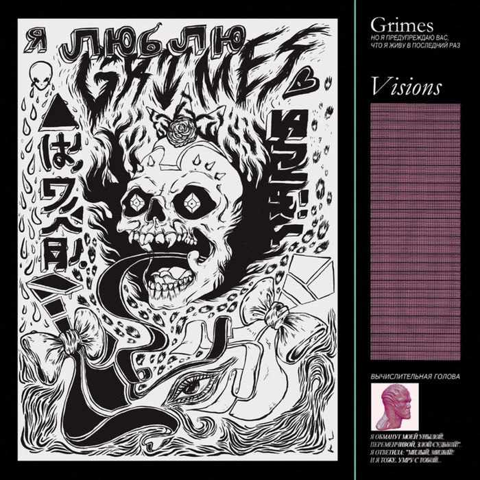
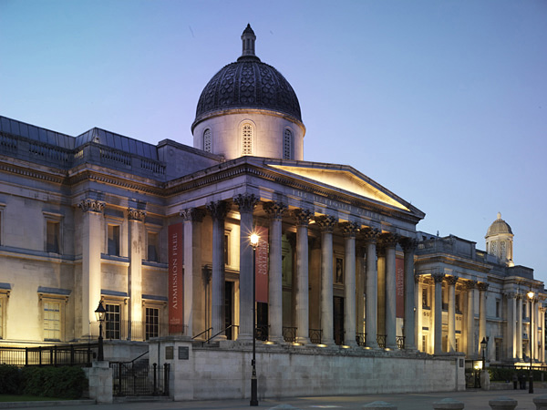

Visual Art and Albums
 VHumans crave visual stimulation. In Candid Orange, Alastair Bailey states that “the closest equivalent to an album and its artwork is a book and its front cover” (Bailey, 2020). Album covers and book covers are very similar, in the way that it is the first thing one sees. Before someone reads the book or listens to the music, their eyes see the front cover. As hard as we may try, judgment is easily formed in our brains. If one does not see a cover that sparks their interest and imagination, they most likely would not read or listen to it. However, books have blurbs that the reader can see before committing, whereas albums must rely on their cover art alone to entice the listener.
The album cover art transports the listener to a visual realm, sets a mood and tone for the listener, and conveys the artist's intent behind the album. Artists who create their own album art expand the listener's interpretation. An example of this would be Grimes, who creates all of her album covers’ illustrations. The illustrated design of her album Visions showcases the mood; the chaos of the doodles creates more depth to the dark, twistedness of the album. On the contrary, her album Art Angels cover art is full of vivid colors and an “angel,” which depicts a kind of sickly sweetness. The album art is important because it adds another layer to an album, increasing its effectiveness in capturing a particular mood or feeling (Bolot, 2019).
Album artwork offers an expansion of visual art onto the auditory art of the music. A potential listener could judge the album entirely based on the art on the cover. This is why it is important to include the visual aspect; to draw in potential listeners. The combination of visual and auditory art is important to the listener’s interpretation of the music.
Career Research Project: Graphic Design
Graphic designers create visual concepts, either by using computer software or by hand, to communicate ideas to consumers (Graphic Designers, 2021). They combine both art and technology to convey ideas through text and images. When creating, they “often select the type, font, size, color, and line length of headlines, headings, and text,” in addition to choosing how said text will collaborate with the images on the webpage or in print (Graphic Designers, 2021). There are a variety of duties graphic designers must perform. According to Graphic Designers: Occupation Outlook Handbook (2021), they typically must meet with their client or art director to define the scope of the project; use computer software to illustrate, edit photos, and edit layouts to create designs; deliver messages by creating visual concepts; design layouts; present design concepts; incorporate recommended changes into final designs; and review the designs for errors prior to printing and/or publishing.
As for their work environment, graphic designers commonly work in studios. This is due to the fact that they have access to needed equipment such as computers, drafting tables, and software. Most graphic designers work independently with clients, however, those who work for specialized graphic design firms often collaborate with colleagues for projects. Graphic designers’ schedules are not always consistent because their deadlines and workloads vary. Flexibility is key for those who are self-employed. Clients may request to meet in the evening or the weekend as opposed to during usual business hours (Graphic Designers, 2021).
According to Graphic Designers: Occupation Outlook Handbook (2021), “employment of graphic designers is projected to grow 3 percent from 2020 to 2030, [which is] slower than the average for all occupations.” Although the projected growth is limited, graphic design will always be in demand. Companies are constantly looking to increase their digital presence, so graphic designers will be needed to “help create visually appealing and effective layouts of websites” (Graphic Designers, 2021). Projections Central contains more detailed information about the long-term projections for graphic designers. From 2018 to 2028, it is estimated that the occupation will grow 6.1 percent in North Carolina specifically (The PMP, 2018). With this being said, there is a slight possibility it will be difficult finding a job after graduation, but it is not definite.
Art Museum/Gallery Visit
 Art has always been, and will always be, a crucial component of society. It allows us to communicate thoughts and feelings that cannot be spoken or otherwise stated. We use art to express ourselves – to show and embrace our individuality. In turn, this helps us to create a diverse society in which we can all have an impact on the world. Because art portrays our individuality and is subjective, it can be perceived and interpreted in a variety of different ways. I decided to do a virtual tour at The National Gallery (Sainsbury Wing) in London, England, United Kingdom.
The National Gallery – specifically the Sainsbury Wing – showcases a collection of over 270 Early Renaissance paintings from 1200 to 1500. There are 16 rooms within this wing, and although some of them are currently closed, they each contain different artists, places, and/or periods of time. Some places include Italy, Siena, and Florence – with a variety of time spans depending on the room. There are also rooms dedicated to specific artists, such as Raphael, Michelangelo, and Leonardo da Vinci.
Because we had the opportunity to choose a virtual museum or gallery, I decided to broaden my horizon. Instead of choosing something local, I wanted to explore another part of the world. I have always wanted to visit England, so I decided to use Google to find a museum or gallery located there. I am very glad I did; it is fun moving throughout the building, switching through the rooms, and clicking on the red circles to reveal more information about each piece. While I would definitely have a more fulfilling experience in person – especially due to the fact that only one wing is virtual – it was great to have the opportunity to tour a part of it.